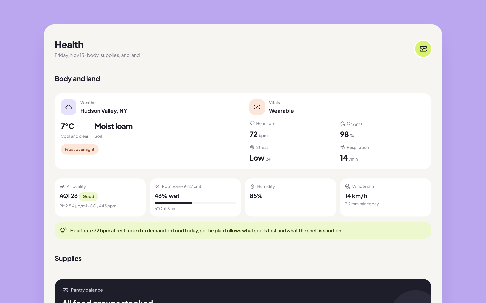
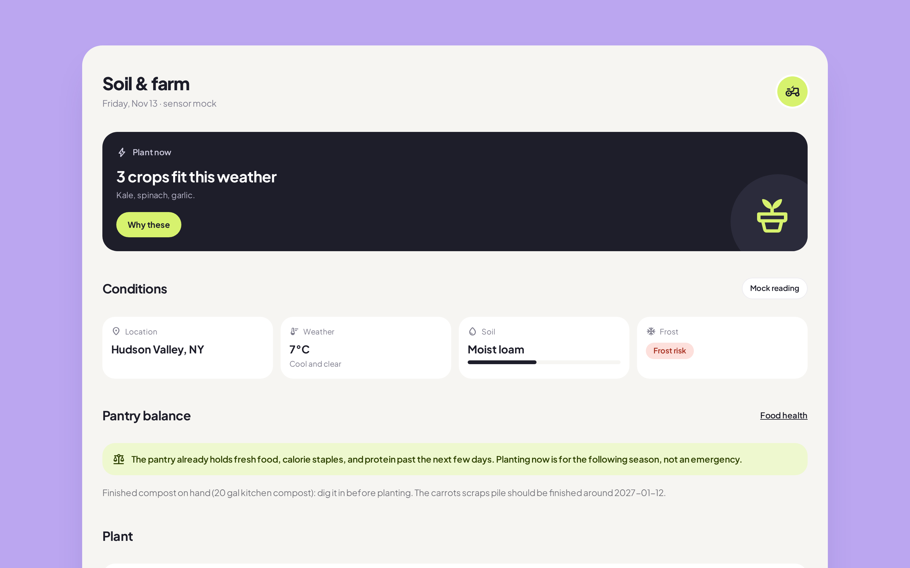
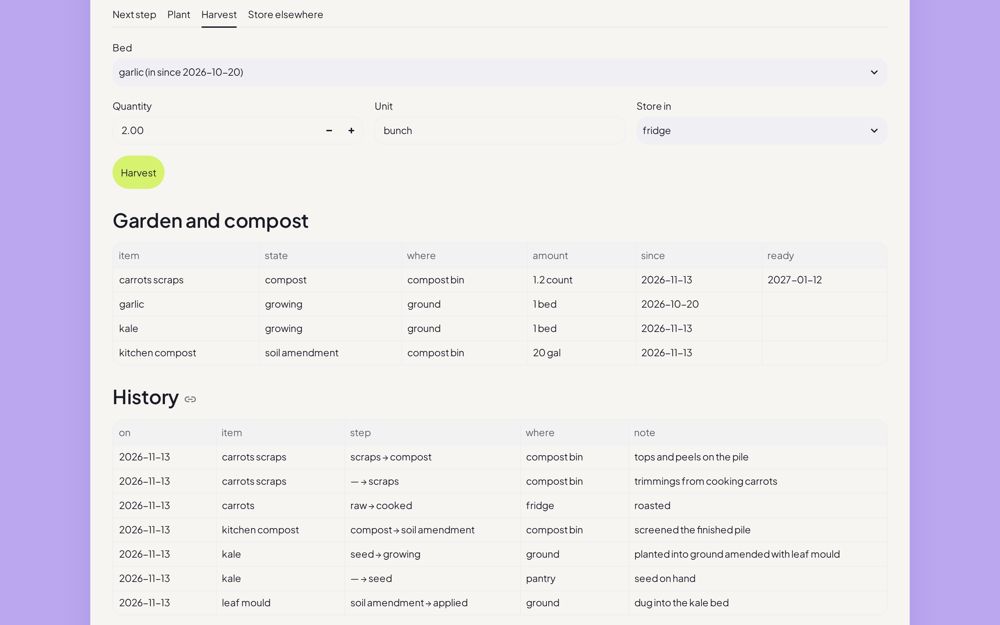
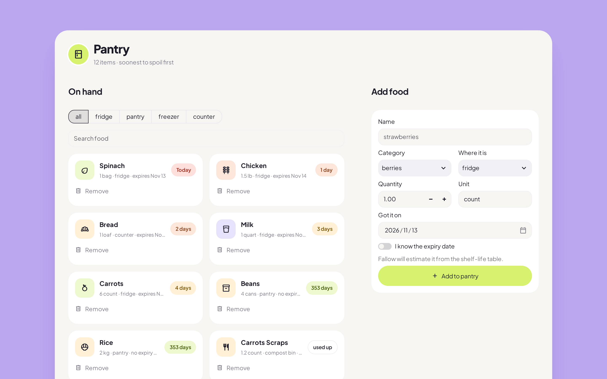
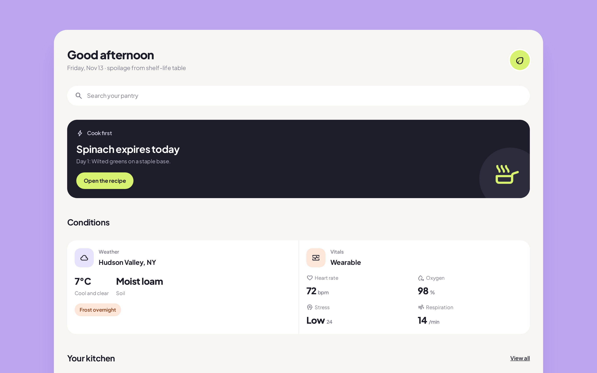
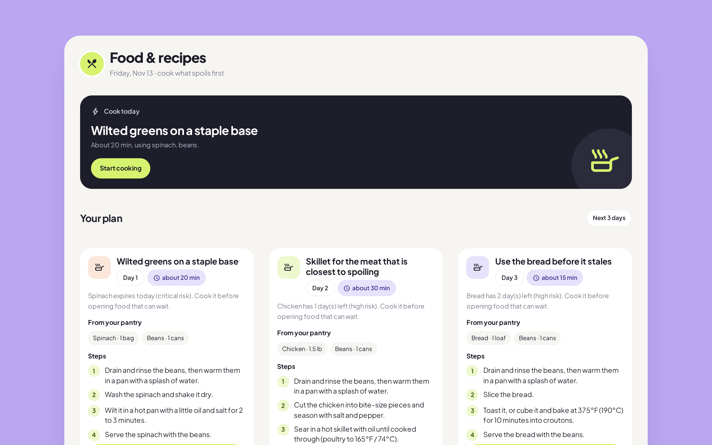
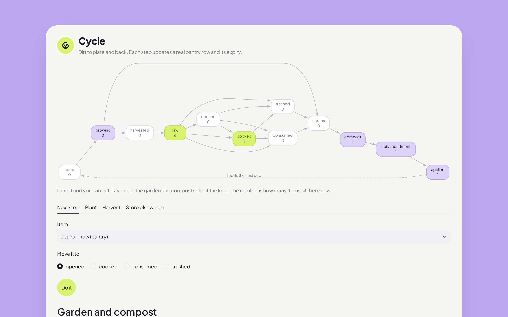

Dirt to plate and back.
A survival-grade kitchen and garden planner
HackPerimeter 2026
30–40% of the US food supply is wasted (USDA).







✓ core feature · ~ partly · — not covered. Typical apps in each category; individual products vary.
Nothing rots. Nothing is wasted.
Everything is planned.